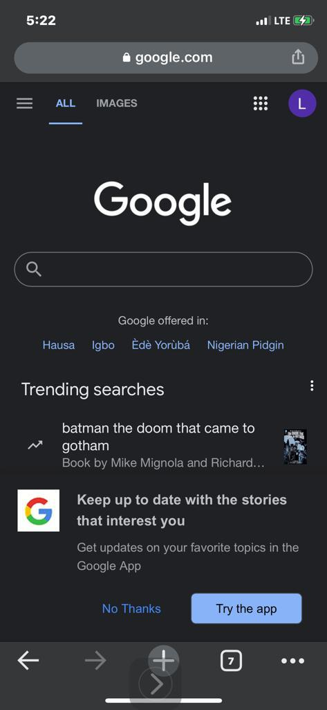

Contrast
Github
github.comThis Github dashboard page is a very good example of contrast in design. In the image it can be seen that the backgroud is a very dark colour with text and icons The background with lighter colour like white, light gray or the button that is green. Using this method makes makes it very easy for a user to understand what the focus on the website is.
Proximity
Jumia
www.jumia.com.ng
This website to me is a good example of proximity as can be seen from the image. On the website it can be seen that different items are placed closely together allowing the user the oppourtunity to see different products at the same time. This is a good tactics because it helps in keeping users more engaged with the website as the can see many items at the same time.
Whitespace

This is a good example of a white space. The Google homepage is a very minimalist webpage that focuses all attention on the suggestion session and the search area.This points more to the fact that google is simple a search engine and so users dont get carried away with different activities or images in the home page.